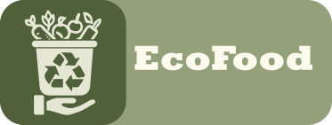
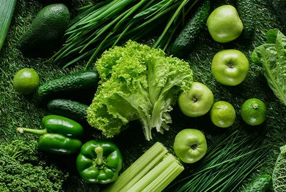
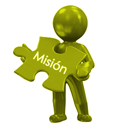

EcoFood es una organización comprometida con la reducción del desperdicio alimentario mediante iniciativas educativas, tecnológicas y prácticas cotidianas. Nuestro propósito es promover un mundo más justo y sostenible, ayudando a las personas y comunidades a optimizar el uso de los alimentos, reduciendo residuos y protegiendo nuestro planeta.

Nuestra misión es sensibilizar y movilizar a las comunidades locales y globales sobre la importancia de reducir el desperdicio de alimentos, brindando herramientas prácticas, educativas y tecnológicas que permitan a las personas adoptar hábitos sostenibles y responsables para mejorar la seguridad alimentaria y proteger el medio ambiente.

Nuestra visión es un mundo en el cual los alimentos se valoren y aprovechen responsablemente, en donde la seguridad alimentaria esté garantizada para todos y el desperdicio alimentario sea mínimo, generando un impacto positivo significativo en el medio ambiente, la economía y la sociedad.
Ofrecemos materiales educativos gratuitos y talleres comunitarios para fomentar prácticas sostenibles en el consumo de alimentos.
Promovemos alianzas entre productores, comerciantes, consumidores y comunidades para reducir excedentes y aprovechar al máximo los alimentos disponibles.
Utilizamos la tecnología para desarrollar soluciones prácticas, como aplicaciones móviles, plataformas web y redes comunitarias que faciliten la reducción del desperdicio alimentario.
1/3 de los alimentos producidos globalmente se desperdician (FAO, 2021).
El desperdicio alimentario genera aproximadamente 8-10% de las emisiones mundiales de gases de efecto invernadero.
Más de 820 millones de personas sufren inseguridad alimentaria en el mundo.
Reducir en solo un 25% el desperdicio alimentario global podría alimentar a 870 millones de personas.
Consume responsablemente: Planifica tus compras y utiliza alimentos de forma eficiente.
Apoya iniciativas locales: Compra productos locales y de temporada.
Difunde conciencia: Comparte información sobre el impacto del desperdicio alimentario con tu comunidad.
Participa: Únete a nuestras campañas y eventos para generar cambios significativos.
Dirección: Calle Verde 123, Ciudad Sostenible.
Correo electrónico: contacto@ecofood.org
Teléfono: +56 9 1234 5678
Facebook: EcoFoodOficial
Instagram: @ecofood_oficial
Twitter: @EcoFood_org